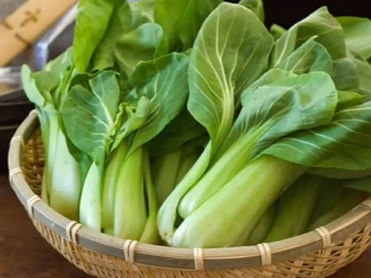

ARTIKEL
Tips Mudah Bercocok Tanam dengan Hidroponik : Menanam Sayur Sawi
___
Bagi Anda pecinta sayuran, nama sawi hijau pasti tidak asing lagi bagi Anda. Sawi hijau termasuk jenis sayuran yang banyak digemari oleh masyarakat. Sehingga tak heran jika banyak petani yang membudidayakan jenis sayuran ini karena permintaannya cukup besar. Jika Anda salah satu penggemar sawi hijau tak ada salahnya Anda membudidayakan sendiri sayuran ini. Meskipun Anda tidak memiliki lahan, Anda tetap dapat membudidayakan sayuran ini dengan sistem hidroponik. Cara menanam sawi hijau secara hidroponik sangat mudah dan media tanamnya pun tersedia di lingkungan sekitar kita.
Tanaman sawi sendiri sebenarnya ada bermacam-macam jenisnya. Ada sawi hijau (brassica juncea) atau sering disebut juga dengan sawi bakso, caisim, atau caisin. Sawi putih (brassica rapa) atau disebut juga dengan petsai. Kailan (brassica oleracea) adalah jenis sawi lain yang agak berbeda, karena memiliki daun yang lebih tebal dan lebih cocok menjadi bahan campuran mi goreng. Jenis sawi yang paling banyak dibudidayakan adalah sawi hijau karena memiliki aneka manfaat yang baik bagi kesehatan tubuh dan kandungan nutrisinya yang beragam. Anti-oksidannya yang tinggi juga sangat bagus untuk menghindarkan Anda dari penyakit flu. Jika Anda tertarik, simak ulasannya berikut ini terkait cara mudah menanam sawi hijau secara hidroponik.
Langkah-Langkah Menanam Sawi Hidroponik

- Membuat Instalasi Hidroponik
- Pipa paralon berukuran 2,5-3 inc beserta pipa L dan T
- Net pot jika tidak ada bisa diganti dengan gelas air mineral
- Sumbu kompor atau kain flanel
- Larutan nutrisi
- Rockwoll atau bisa menggunakan sabut kelapa dan nampan
- Buat lubang pada pipa paralon sesuai ukuran net pot atau gelas air mineral, dengan jarak antar lubang sekitar 10-15cm.
- Buat lubang kanan kiri pada samping bawah gelas mineral sebagai tempat sumbu. Bila menggunakan net pot tidak perlu membuat lubang sumbu.
- Masukkan sumbu pada lubang gelas yang telah dibuat.
- Buat penopang intalasi hidroponik menggunakan pipa paralon kecil, kayu, bambu, atau besi.
- Setelah intalasi siap, isilah pipa paralon dengan larutan nutrisi hidroponik Hingga penuh. Masukkan net pot yang telah diberi sumbu pada lubang paralon.
- Persiapan benih
- Tahap selanjutnya adalah mempersiapkan benih sawi yang akan ditanam. benih sawi yang dipilih tentunya yang sehat, berkualitas, bebas dari berbagai jenis penyakit, dan memiliki tingkat pertumbuhan dan perkecambahan yang baik.
- Penyemaian benih
- Potong rockwol berbentuk dadu dengan ukuran disesuaikan dengan ukuran netpot atau gelas air mineral
- Masukkan rockwol yang telah dipotong pada sebuah nampan atau baki.
- Basahi rockwol dengan air bersih dan buat lubang tanam pada rock wol.
- Masukkan benih pada lubang tanam tersebut dengan jumalah satu potong rockwol satu benih
- Letakkan media semai pada tempat yang gelap dan sejuk hingga benih
- Setelah benih berkecambah, letakkan benih pada tempat yang terkena sinar Matahari agar tidak terkena etiolasi. Setelah benih berdaun 4, benih sudah dapat dipindah ke net pot atau intalasi hidroponik.
- Penanaman sawi
- Karena menggunakan media tanam berupa rockwoll, cara menanam sawi cukup dengan memindahkan rockwol yang berisi bibit ke dalam net pot yang telah berisi larutan nutrisi.
- Pindahkan bibit secara hati-hati, karena sawi merupakan tanaman lunak sehingga rentan terhadap benda di sekitarnya.
- Jika menggunakan media tanam berupa sabut kelapa (pengganti rockwol) dan menyemainya pada lahan semai, cukup mencabut bibit dengan hati hati. Masukkan sabut kelapa pada netpot kemudian tanam bibit pada sabut kelapa tersebut dengan hati-hati.
Sebelum dilakukan budidaya hidroponik, langah pertama yang harus dilakukan tentu saja adalah mempersiapkan intalasi hidroponik terlebih dahulu. Alat dan bahan instalasi antara lain :
Cara membuat peralatan hidroponik :
Cara menyemai menggunakna rockwol :
Perawatan dan Masa Panen Sawi
Perawatan tanaman sawi hidroponik meliputi pengontrolan nutrisi, pengontrolan bila ada gulma dan hama, dan penyulaman jika terdapat tanaman yang mati atau kerdil. Karena kehidupan sawi hidroponik sangat tergantung pada larutan nutrisi, maka pengontrolan nutrisi harus dilakukan secara rutin, Lakukan penambahan nutrisi jika nutrisi pada paralaon sudah menipis. Untuk mengantisipasi tumbuhnya gulma pada tanaman sawi, anda dapat melakukan pengecekan setiap 3 hari sekali. Untuk penyulaman hanya dilakukan jika ditemukan tanaman yang mati atau kerdil. Ganti tanaman yang mati atau kerdil tersebut dengan tanaman yang baru.
Masa panen sawi hidroponik dapat dilakukan pada usia 3 bulan dari masa tanam. Pemanenan bisa lebih cepat tergantung dari varietas yang ditanam dan pertumbuhan tanaman. Lalu bagaimana cara memanennya? Caranya sangat mudah, hanya dengan mencabut sawi yang sudah besar dari net pot secara perlahan.
___
Demikian uraian singkat mengenai Tips Mudah Bercocok Tanam dengan Hidroponik : Budidaya Sayur Sawi. Untuk lebih jelasnya, kalian dapat menonton Video Tutorial Hidroponik Pemula di bawah ini.
___